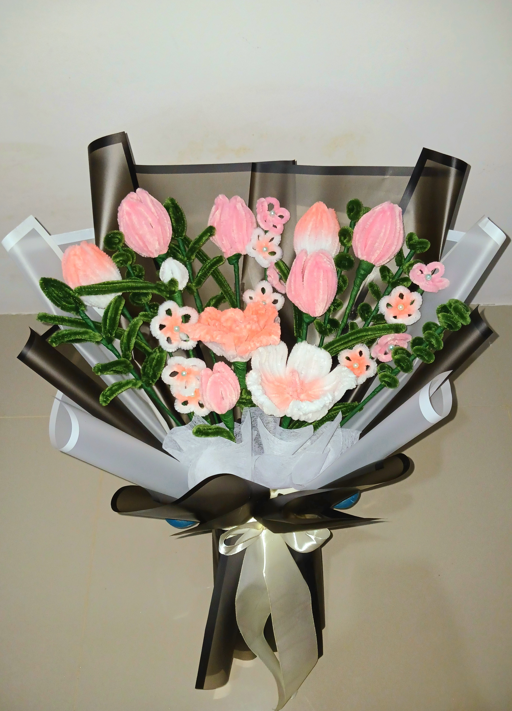
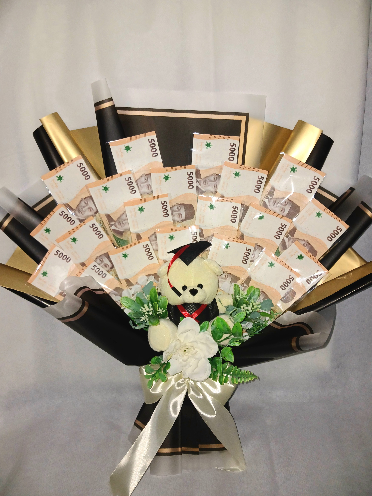
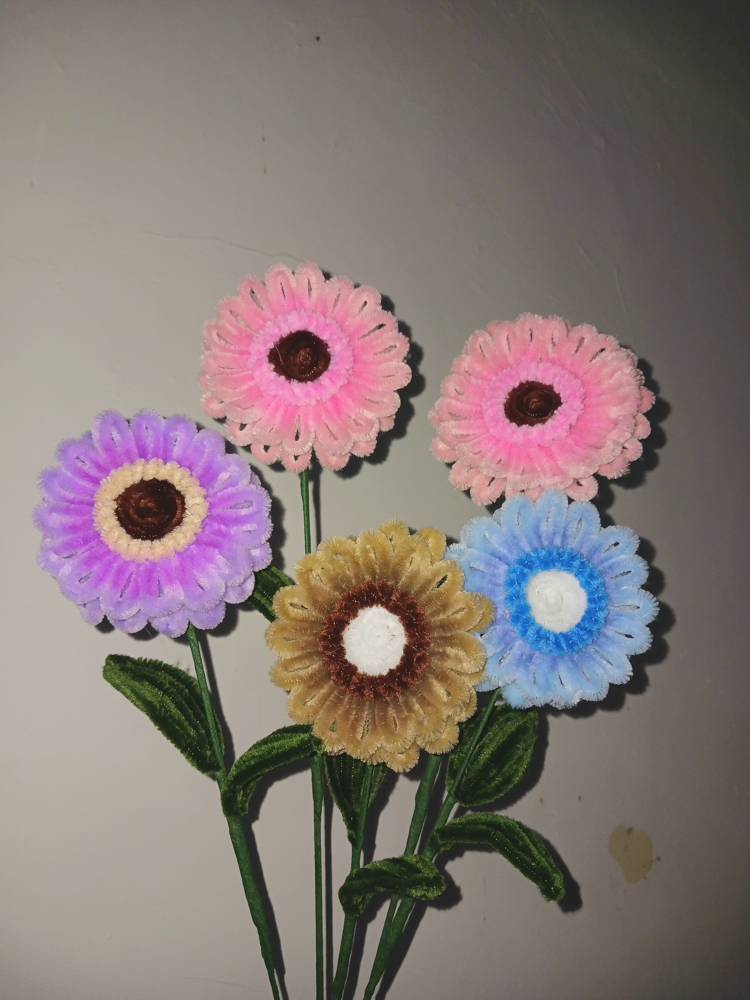
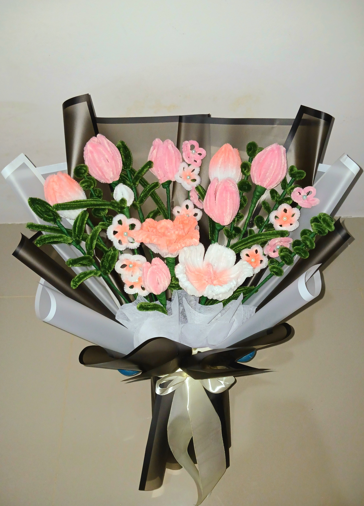
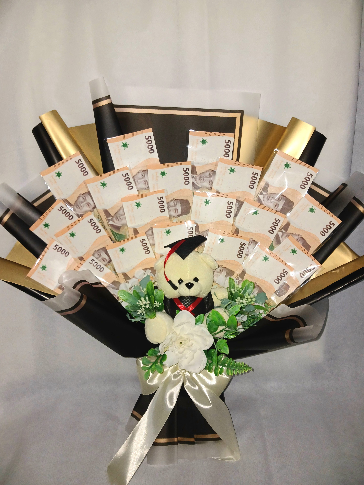
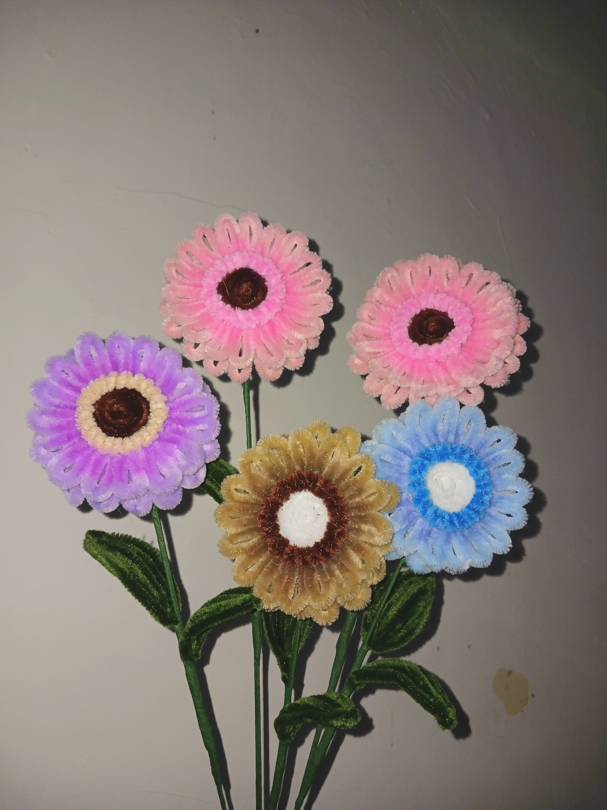

Welcome to My Portfolio
Selamat datang di portofolio saya
Selamat datang di halaman utama portofolio saya! Saya sangat senang Anda mengunjungi ruang ini. Di sini, Anda akan menemukan berbagai karya dan proyek yang mencerminkan perjalanan profesional dan kreativitas saya. Setiap bagian dari portofolio ini dirancang untuk memberikan wawasan tentang keahlian dan pengalaman saya. Saya berharap Anda menikmati menjelajahi karya-karya ini dan menemukan inspirasi yang bermanfaat. Terima kasih telah meluangkan waktu untuk berkunjung!

Sorotan Perjalanan Saya
Sorotan perjalanan saya selama kuliah mencakup pengalaman berharga dan pencapaian yang telah membentuk diri saya sebagai individu dan profesional. Dari proyek-proyek akademik yang menantang hingga keterlibatan dalam kegiatan di kampus, setiap langkah dalam perjalanan ini memberikan pelajaran berharga dan memperluas keahlian saya. Saya sangat antusias untuk terus belajar dan berkembang di dunia ini, serta berkontribusi lebih banyak di masa depan.

Sebuah Perjalanan Melalui Kenanganku
Album Kenangan saya nanti akan menampilkan momen-momen berharga selama perjalanan saya, termasuk masa-masa penuh semangat sebagai mahasiswa. Setiap foto bukan sekadar gambar, tetapi sebuah cerita yang mengandung emosi, tawa, dan makna tersendiri. Koleksi ini memuat berbagai pencapaian akademis yang membanggakan, petualangan baru yang memberi pengalaman berharga, serta momen hangat bersama keluarga dan teman-teman yang mendukung perjalanan saya. Dari capaian di kampus hingga pengalaman kreatif yang memacu semangat, setiap kenangan ini mencerminkan perjalanan saya dalam mencari ilmu dan makna hidup. Saya berharap, saat Anda menjelajahi album ini, Anda bisa merasakan semangat yang sama dan mungkin terinspirasi untuk merenungi kisah perjalanan Anda sendiri. Mari kita rayakan bersama setiap langkah yang membuat hidup begitu berharga.

Pendidikan
Tahun 2023, saya memulai perjalanan akademis di Universitas Negeri Surabaya dengan memilih Program Studi S1 Sistem Informasi. Melalui program ini, saya mendalami dasar-dasar teknologi informasi, pemrograman, dan analisis sistem, yang menjadi fondasi kuat dalam memahami bagaimana sistem informasi dapat digunakan untuk memecahkan masalah nyata. Selama masa perkuliahan, saya berkesempatan mempelajari berbagai mata kuliah penting seperti : Analisis dan Desain Sistem, Basis Data, atau Pengembangan Aplikasi Web, yang telah mengasah keterampilan teknis dan logika pemrograman saya.


 




